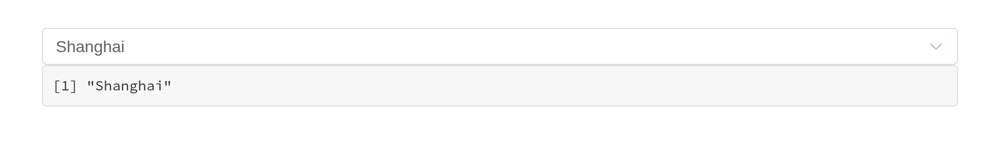
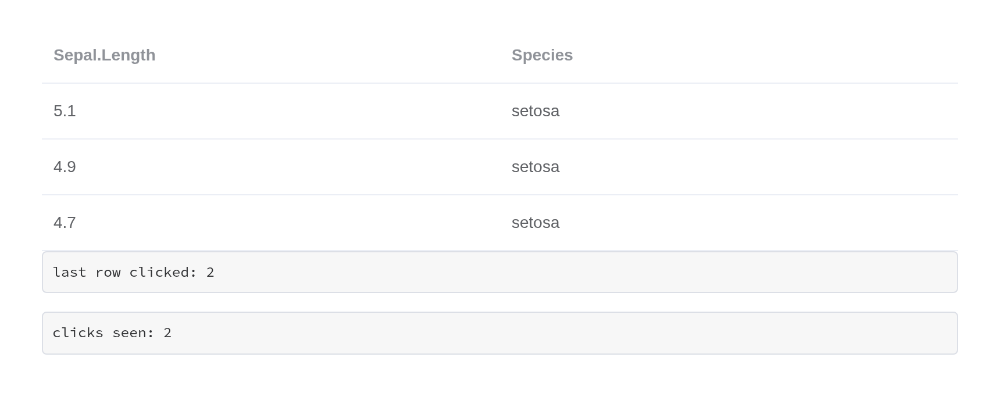
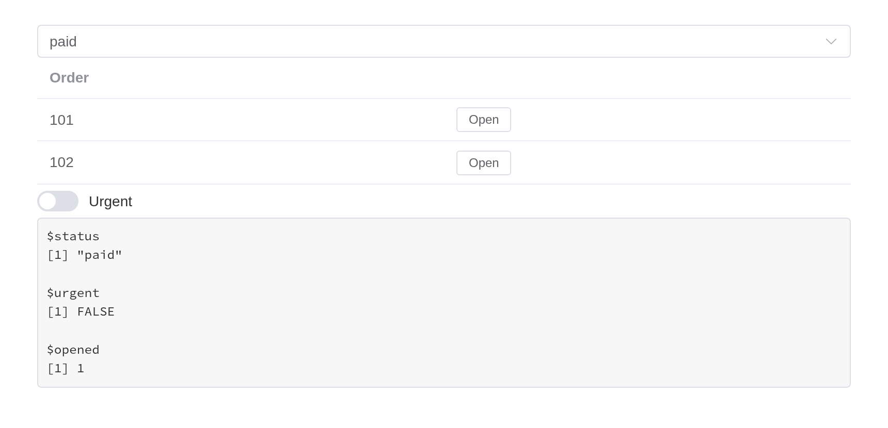
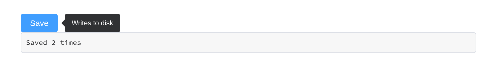
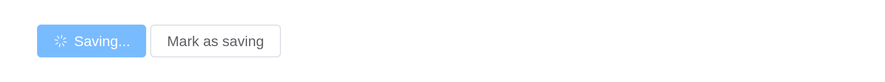
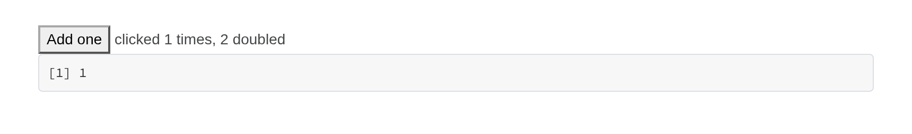
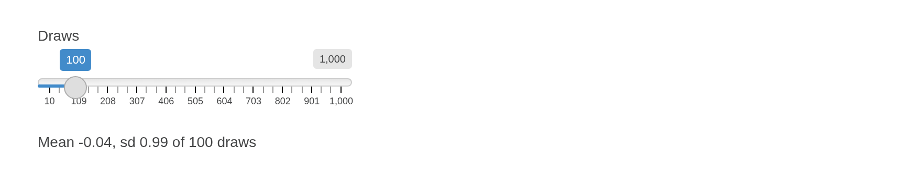
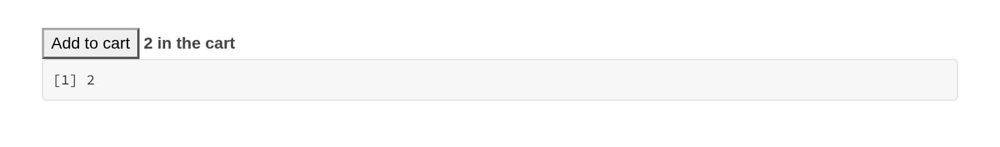
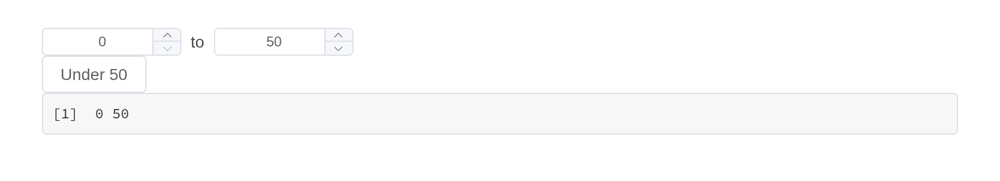

How the components meet Shiny: what they report, how the server reaches them, how they behave in modules, with bookmarks and alongside the rest of the Shiny ecosystem, and how to build components of your own. Each component’s own page – under Components – shows what Element does with it.
Reading and writing a component
A component reports to input$<id>, on load as well
as on change:
ui <- el_page(
el_select("city", choices = c("Beijing", "Shanghai"), value = "Shanghai"),
verbatimTextOutput("picked")
)
server <- function(input, output, session) {
output$picked <- renderPrint(input$city)
}
shinyApp(ui, server)
Three separate channels reach back into it, and they do different things:
| Reaches | Example | |
|---|---|---|
update_el_*() |
the component’s props | update_el_select(session, "city", selected = "Beijing") |
call_el() |
the component’s methods | call_el(session, "tbl", "clearSelection") |
update_vue() |
the Vue instance’s fields directly | update_vue(session, "tip", tipContent = "...") |
Like Shiny’s update*Input(), each takes the current
session by default, so
update_el_select(id = "city", selected = "Beijing") is the
same call. An update reaches a component whether or not it has a value
to report – an alert, a timeline, a component only ever drawn by
renderUI() – and one sent to an id that is not on the page,
or to a field the component does not have, logs a
[shiny-vue] warning in the browser console rather than
vanishing.
update_el_*() cannot call a method, because it assigns
into the Vue instance’s data and a method is a function. That is what
call_el() is for. A method with a return value answers
asynchronously, as input$<id>_<method>:
ui <- el_page(
el_tree(
"tree",
show_checkbox = TRUE,
node_key = "id",
default_expand_all = TRUE,
checked = c("b1", "c"),
data = list(
list(
id = "a",
label = "Fruit",
children = list(
list(id = "b1", label = "Apple"),
list(id = "b2", label = "Pear")
)
),
list(id = "c", label = "Bread")
)
),
el_button("ask", "Which are checked?"),
verbatimTextOutput("answer")
)
server <- function(input, output, session) {
observeEvent(input$ask, call_el(session, "tree", "getCheckedKeys"))
output$answer <- renderPrint(input$tree_get_checked_keys)
}
shinyApp(ui, server)
Events are event inputs
Every forwarded Element event sets its input with event priority. The
input keeps its last value like any other; what event priority adds is
that sending the same value again still counts as a change. Clicking the
same row twice fires an observeEvent() twice – while an
output that only reads the value sees nothing new the second time.
Here is the same row clicked twice. The output reading the value shows where the last click landed; only the observer knows there were two:
ui <- el_page(
el_table_output("tbl"),
verbatimTextOutput("polled"),
verbatimTextOutput("latched")
)
server <- function(input, output, session) {
output$tbl <- render_el_table(
el_table(data = head(iris[, c(1, 5)], 3)) |> el_on("row-click")
)
# Reading the value: the last row clicked, but not how many times
output$polled <- renderText({
paste("last row clicked:", input$tbl_row_click$row_index)
})
# Observing the event: runs once per click, repeats included
clicks <- reactiveVal(0)
observeEvent(input$tbl_row_click, clicks(clicks() + 1))
output$latched <- renderText(paste("clicks seen:", clicks()))
}
shinyApp(ui, server)
An event whose arguments cannot cross the wire – a native
FocusEvent, a DOM node, a whole Vue instance – reports
TRUE instead, so an observer can still tell that it
happened.
Shiny modules
Components follow Shiny’s own rule. In a module’s UI, the id is
wrapped in ns(), exactly as for textInput();
in its server, input$<id> and every
update_el_*() take the bare id, namespaced by the module’s
session. That holds for UI built by renderUI() inside the
module too, and for the inputs a component adds to its id –
input$rows_go from a row action,
input$tabs_edit, input$rows_selection_change.
An output is the same: el_table_output(ns("rows")) in the
UI, output$rows in the server.
orders_ui <- function(id) {
ns <- NS(id)
tagList(
el_select(ns("status"), choices = c("paid", "pending"), selected = "paid"),
el_table_output(ns("rows")),
uiOutput(ns("more")),
verbatimTextOutput(ns("seen"))
)
}
orders_server <- function(id) {
moduleServer(id, function(input, output, session) {
output$rows <- render_el_table(el_table(
data = data.frame(order = c(101, 102)),
columns = list(
list(prop = "order", label = "Order"),
list(
label = "",
cell = el$button(
size = "small",
"@click" = "rowAction('open', scope)",
"Open"
)
)
)
))
# Built in the server, still wrapped in ns() once
output$more <- renderUI(el_switch(
session$ns("urgent"),
active_text = "Urgent"
))
output$seen <- renderPrint(list(
status = input$status,
urgent = input$urgent,
opened = input$rows_open$row_index
))
})
}
ui <- el_page(orders_ui("orders"))
server <- function(input, output, session) orders_server("orders")
shinyApp(ui, server)
Before 0.1.0 the UI functions namespaced their id themselves, from
the session they were built in – which inside renderUI() in
a module turned ns("urgent") into
"orders-orders-urgent", an input that never reported. They
no longer do; their session argument is deprecated, and a
session passed to it still namespaces, with a warning.
Shiny’s own tools
Each component is a Shiny input binding on a host element that carries its id, so the tools that work on Shiny’s inputs work on these.
Bookmarking. Under enableBookmarking(),
every component’s value comes back from a bookmark – including where a
container is: the open tab, the open panels of a collapse, an open
dialog or drawer, the menu’s current item, the pager’s page. Nothing
needs to be set up beyond what Shiny itself asks for.
ui <- function(request) {
el_page(
el_select("city", choices = c("Beijing", "Shanghai")),
el_tabs(
"views",
tabs = list(
list(name = "table", label = "Table", content = tags$p("...")),
list(name = "chart", label = "Chart", content = tags$p("..."))
)
),
bookmarkButton()
)
}
server <- function(input, output, session) {}
shinyApp(ui, server, enableBookmarking = "url")shinyjs. shinyjs::hide() and
show() take the component and its label with it;
disable() and enable() set the component’s own
disabled, so it is drawn disabled as Element draws it
rather than having a native attribute set somewhere underneath.
reset() puts the components under the element it is given
back as the page first had them, beside Shiny’s own inputs; to set any
other value, use the component’s update_el_*().
hidden() and disabled() wrap a component in
the UI, click() clicks the button or link inside it, and
onclick() and onevent() hear events from
inside it. addClass() puts a class on the component’s host,
which draws no box of its own (display: contents): style
the component with its own class argument instead.
bslib. Components work in bslib’s containers – a
sidebar, a card, an accordion, a nav panel not yet shown – and bslib’s
tooltip() and popover() take one as their
trigger. bslib’s input_dark_mode() turns Element Plus’s
dark mode with Bootstrap’s. Element’s brand colours follow Bootstrap’s
CSS variables, so a theme changed while the app runs –
session$setCurrentTheme(), bslib::bs_themer()
– recolours Element’s components too.
Busy indicators. Under
useBusyIndicators() a table output keeps Element’s own
loading mask while it recalculates, in place of Shiny’s spinner;
el_table_output(loading = FALSE) gives it Shiny’s.
Asynchronous work. Every render function waits for a
promise, so the result of an ExtendedTask or a
promises pipeline can be rendered as a table or as a
component’s data.
Inserting and removing. insertUI() and
renderUI() mount what they add; removeUI() on
a component’s id removes it and destroys its Vue instance, so it stops
reporting.
Validation. shinyvalidate draws its message the way Element draws a failed rule; see the forms article.
Testing. shinytest2’s set_inputs() and
get_values() read and write a component as they do a
textInput(). An input with no component of its own behind
it – a table’s _selection_rows, an event such as
_row_click – has no input binding, so
set_inputs() needs
allow_no_input_binding_ = TRUE for it, and sets the
server’s value only: the page does not tick the rows.
Nesting components
Two kinds of component wrap other content, and they behave differently.
Containers are plain markup. el_row(),
el_col(), el_container(),
el_collapse(), el_tabs(),
el_dialog() and el_drawer() render Element’s
own CSS classes and drive their state through a Shiny input binding.
They hold anything, and what is inside keeps working as it would on its
own.
el_collapse(
"panels",
value = "one",
items = list(
list(
name = "one",
title = "Settings",
content = tagList(
el_switch("dark", value = TRUE, active_text = "Dark mode"),
el_rate("stars", value = 4)
)
),
list(name = "two", title = "About", content = tags$p("Version 0.1.0"))
)
)Wrappers absorb what they are given.
el_tooltip(), el_popover(),
el_popconfirm() and el_infinite_scroll()
compile their content into their own Vue instance, so a component handed
to one is folded in rather than nested: the two become a single instance
carrying both sets of markup, data and methods.
ui <- el_page(
el_tooltip("hint", el_button("save", "Save", type = "primary"),
content = "Writes to disk", placement = "right"),
verbatimTextOutput("clicks")
)
server <- function(input, output, session) {
output$clicks <- renderText(paste("Saved", input$save, "times")) # still reports
}
shinyApp(ui, server)
This costs one thing. An absorbed component has no host of its own,
so nothing to send its update_el_*() to, and that stops
working – the browser console says so, with a [shiny-vue]
warning naming the id. Drive it through the wrapper instead:
ui <- el_page(
el_tooltip(
"hint",
el_button("save", "Save", type = "primary"),
content = "Writes to disk"
),
el_button("busy", "Mark as saving")
)
server <- function(input, output, session) {
observeEvent(input$busy, {
# Not update_el_button(session, "save", ...): the button has no host
# of its own any more. Its fields live on the tooltip.
update_vue(session, "hint", label = "Saving...", loading = TRUE)
})
}
shinyApp(ui, server)
If two absorbed components declare the same field – most declare a
label, a type and a disabled –
the second one’s fields are renamed on the way in
(el3_label), and the markup that names them is rewritten to
match. You only notice when reaching in with update_vue(),
where the renamed field is what to set.
Slots
Every component takes slots, a named list:
el_alert(
"problem",
type = "error",
show_icon = TRUE,
description = "The upload was larger than 5 MB.",
slots = list(title = tags$span(tags$b("Upload failed"), " -- try again"))
)A scoped slot – one where Element hands the template variables that
only exist while Vue renders – is written with template()
and passed through untouched:
el_calendar(
"cal",
value = "2026-03-15",
slots = list(
dateCell = template(
htmltools::HTML(paste0(
"<div>{{ data.day.slice(8) }}",
"<b v-if=\"data.day.slice(8) === '15'\" style=\"color:#F56C6C\">",
" due</b></div>"
)),
slot = "dateCell",
scope = "{date, data}"
)
)
)Filling a slot replaces what Element put there, default and all.
Element’s el-form-item error slot, for instance, wraps the
message in div.el-form-item__error; a template that renders
only the message loses the styling with it.
Element’s own markup
el holds a generator for every Element tag, for markup
that needs no Vue instance of its own – inside one that already exists.
Vue compiles <el-*> tags only within the component it
mounts, so a raw tag goes where a component draws its contents: a
template(), a slot, a table cell, a wrapper’s
trigger.
# The tooltip's instance compiles the raw button it wraps
el_tooltip(
"hint",
el$button(type = "primary", "Markup only"),
content = "No input"
)
el_button("save", "A component", type = "primary") # reports input$savePlaced at the top level of a page, the same el$button()
is never compiled and shows as its bare text. Use the raw tag where a
component would be wasted, and a component where the server needs to
hear about it.
Building your own
Every component in this package is a Vue component on a host element
that carries its id, with a Shiny input binding on it – the way reactR
binds React components – so the rest of Shiny reaches it:
shinyjs::hide(), removeUI(), a test driver’s
set_inputs(), bookmarks. The layer that does this is
exported, and knows nothing of Element: vue_app() writes a
Vue component in R.
Vue’s options, under Vue’s names
The arguments of vue_app() are the options of a Vue 3
component – template, data,
methods, computed, watch,
emits, setup, components, the
lifecycle hooks – under Vue’s own names (a multi-word one also as
snake_case: before_unmount). Three things are added, as
Shiny needs them: id, where the component goes and what the
server calls it; input, the field that is
input$<id>; and dependencies.
use is Vue’s app.use().
ui <- fluidPage(
vue_app(
"counter",
template = tags$div(
tags$button(`@click` = "n++", "Add one"),
tags$span(" clicked {{ n }} times, {{ doubled }} doubled")
),
data = list(n = 0),
computed = list(doubled = JS("function() { return this.n * 2; }")),
input = "n"
),
verbatimTextOutput("n")
)
server <- function(input, output, session) {
output$n <- renderPrint(input$counter)
}
shinyApp(ui, server)
| Vue | In R |
|---|---|
createApp(options).mount('#app') |
vue_app(id, ...) |
data(), methods, computed,
watch, hooks |
the same names; functions written with JS()
|
setup() (the Composition API) |
setup = JS("function() { ... }") |
app.use(Plugin, options) |
use = list(Plugin = options) |
| the component’s value |
input = "<field>", reported as
input$<id>
|
this.$emit("picked", x) |
input$<id>_picked, for an event listed in
emits
|
| a child component | components = list(todo_item = vue_component(...)) |
A component’s value is one field, or several
(input = c("from", "to")) for one value that is a named
list – input$<id>$from,
input$<id>$to, never an input per field – as
dateRangeInput() gives one value of two dates. Anything
else it sends out goes Vue’s way, with $emit(), and arrives
with event priority under the component’s id, as Element’s own events
do: $emit("picked", x) is
input$<id>_picked holding x; several
arguments are a list, arg1, arg2, …; none is
TRUE. Inside a module, wrap the id in ns();
the events follow it.
data is the initial state as R writes it: a list is an
object, a data.frame its rows – a data.frame further in, or a list
column, too. A vector of one element is a single value, as everywhere in
Shiny: c("a", "b") is an array, "a" a string.
Where JavaScript expects an array whatever its length – a list of tags,
v-for over it – wrap it in I():
list(tags = I("red")) is {"tags": ["red"]}.
Show a user’s data through it – {{ field }},
:prop="field" – which Vue renders as text. Never paste it
into the template: a template is code, and {{ }} in it
runs.
Templates: tags or a string
The template takes htmltools tags or a string, and Vue reads both the same:
-
tags when the markup is built in R –
lapply()over columns,ifaround a block, other tags spliced in. Directive names need quoting (`@click`,`:title`,`#header`); expressions with<,>or&are fine, Vue decodes what htmltools escapes. - a string for a template copied from Vue’s or a library’s documentation, or one dense with quotes and expressions: it stays exactly as written.
The server’s way in
| Function | Does | Shiny’s own |
|---|---|---|
update_vue(session, id, field = value, value =) |
sets fields of the component’s state; value is its
input field |
update*Input() |
call_vue(session, id, method, args) |
runs a method; its result comes back as
input$<id>_<method>
|
– |
vue_answer(session, id, request, value) |
answers a component that asked the server
(shinyVue.ask()) |
– |
vue_output(id) / render_vue(expr)
|
draws components from the server, keeping the user’s state |
uiOutput() / renderUI()
|
vue_app(outputs =) /
render_vue_data(expr)
|
sets data fields by name from an output: values, not markup | shinyreact’s reactive_output()
|
render_vue() differs from renderUI() in one
way: a render that changes only a component’s data updates that
component instead of replacing it, so what the user did – a sort, a
tick, an open tab – stays. A render that changes the structure replaces
it, as renderUI() would. Put what changes from render to
render in data, and keep the template the same.
Data from outputs
Two outputs, by who writes the component. render_vue()
draws one the server writes – template, options, methods and data, any
of which a render can change – as shiny.react’s
renderReact() draws React. Where the component is written
in the UI and only its data comes from the server, the component names
an output in outputs and its data follows it:
render_vue_data() renders data fields by name –
list(mean = 1, sd = 2), each value a number, a list, a
data.frame’s rows, a [JS()] function – and the fields it names take
those values, as update_vue() would set them. As there, a
field must be declared in data: Vue tracks only the fields
a component starts with. It is an output as Shiny knows them: it runs
again when what it reads changes, waits while its component is hidden,
waits for a promise, and while it runs
$recalculating.<id> is true, for the
template to say so.
ui <- fluidPage(
sliderInput("n", "Draws", 10, 1000, 100),
vue_app(
"summary",
tags$p(
`:style` = "{opacity: $recalculating.stats ? 0.4 : 1}",
"Mean {{ mean }}, sd {{ sd }} of {{ n }} draws"
),
data = list(mean = NA, sd = NA, n = 0),
outputs = "stats"
)
)
server <- function(input, output, session) {
output$stats <- render_vue_data({
x <- rnorm(input$n)
list(mean = round(mean(x), 2), sd = round(sd(x), 2), n = input$n)
})
}
shinyApp(ui, server)
Inside a module the id is wrapped, as any output’s is:
outputs = ns("stats"). A component can follow several
outputs, each setting its own fields:
outputs = c("stats", "trend").
One output can feed several components, or a vue_store()
that every component reads – the shared state Vue’s guide recommends,
with the server as its source:
ui <- fluidPage(
vue_store("sales", data = list(revenue = 0, growth = 0), outputs = "totals"),
vue_app("kpi", tags$b("{{ $store.sales.revenue }}")),
vue_app("trend", tags$i("{{ $store.sales.growth }} %"))
)
server <- function(input, output, session) {
output$totals <- render_vue_data({
s <- summarise_sales(input$region)
list(revenue = s$revenue, growth = s$growth)
})
}render_vue(), render_vue_data() and
render_el_table() can be cached with
bindCache(), as Shiny’s own render functions can. A table
output caches the table as rendered, the same for every session; read
back from the cache, it is still compared with what each page has, so
the page gets only what changed.
State shared between components
Each component is a Vue application of its own, so Vue’s
provide cannot reach from one to another.
vue_store() is what Vue’s guide recommends instead, one
shared reactive() object, read and written by every
template as $store.<id>.<field> – at once, in
the browser. Give it input and the server sees it too, and
update_vue() sets it:
ui <- fluidPage(
vue_store("cart", data = list(count = 0), input = "count"),
vue_app("add", tags$button(`@click` = "$store.cart.count++", "Add to cart")),
vue_app("badge", tags$b(" {{ $store.cart.count }} in the cart")),
verbatimTextOutput("server_sees")
)
server <- function(input, output, session) {
output$server_sees <- renderPrint(input$cart)
}
shinyApp(ui, server)
A change in the browser shows everywhere at once; one that goes through the server waits for the round trip.
An Element component of your own
el_widget() is vue_app() with Element Plus
installed and a label in Element’s form-item style – what every
component in this package is made of. A price range made of two number
inputs, reported as one value:
price_range_input <- function(id, value = c(0, 100), min = 0, max = 1000) {
el_widget(
id = id,
markup = tags$div(
style = "display: flex; align-items: center; gap: 8px",
el$input_number(
"v-model" = "range[0]",
":min" = "min",
":max" = "range[1]",
"controls-position" = "right",
size = "small"
),
tags$span("to"),
el$input_number(
"v-model" = "range[1]",
":min" = "range[0]",
":max" = "max",
"controls-position" = "right",
size = "small"
)
),
data = list(range = as.list(value), min = min, max = max),
input = "range",
dependency = element_plus_dependency()
)
}
ui <- el_page(
price_range_input("price", value = c(20, 300)),
el_button("cheap", "Under 50"),
verbatimTextOutput("picked")
)
server <- function(input, output, session) {
observeEvent(input$cheap, update_vue(session, "price", value = list(0, 50)))
output$picked <- renderPrint(input$price)
}
shinyApp(ui, server)
Without Shiny
The components also work on a page with no Shiny session – an R
Markdown or Quarto document, a page saved with
htmltools::save_html(). They render and respond: a select
opens and picks, tabs switch, a collapse folds, a table’s rows tick.
What they cannot do there is report: there is no input, and
update_el_*(), call_el() and the feedback
functions have no server to come from. Load the scripts once with
use_element(), as for any page that is not an
el_page(). The examples on this website are built exactly
so.
Data from the server
Where Element takes a JavaScript function to fetch data, the server can answer instead, through an input and an update:
| Component | Asks through | Answered by |
|---|---|---|
el_select(remote = TRUE) |
input$<id>_query |
update_el_select(choices =) |
el_autocomplete(remote = TRUE) |
input$<id>_query |
update_el_autocomplete(suggestions =) |
el_tree(lazy = TRUE) |
input$<id>_load |
el_load_children() |
el_cascader(props = list(lazy = TRUE)) |
input$<id>_lazy_load |
el_load_children() |
el_table(lazy = TRUE) |
input$<id>_load |
el_load_children() |
el_infinite_scroll() |
input$<id>_load |
a uiOutput() inside it |
el_pagination() |
input$<id>, the page |
update_el_table(data =) |
A question the server never answers settles after 30 seconds – a lazy load with nothing, a remote search by leaving its loading state – and a lazy load’s question settles at once when its component is removed or the session ends. The Select, Input, Tree, Cascader and Table pages show each one running.